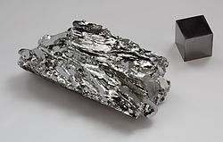

|  |
|
Molybdenum is a chemical element of atomic number At room temperature molybdenum is in the solid state. It is a transition metal found in group 6 (6B) of the Periodic Classification of Elements. It was discovered in 1782 by the Swedish Peter Jacob Hjelm. It is a biologically essential chemical element, and in industry it is widely used in the form of metal alloys, mainly in steel.
History: Molybdenum is not found free in nature and its compounds were confused with compounds of other elements (carbon and lead) until the 18th century. In 1778 Carl Wilhelm Scheele reacted the mineral molybdenite (MoS2) with nitric acid obtaining a compound with acidic properties that called "acidum molibdenae" (the word molybdenum comes from the Greek "molybdos" that means like the lead, since it was confused with this one element). In 1782 Hjelm isolated the crude metal by reducing the above compound with carbon. Molybdenum was used very little in the laboratory until the late nineteenth century when a company used it as a binder and observed the good properties of these alloys containing molybdenum. Main features: Molybdenum is a transition metal. The pure metal is silvery white and very hard; in addition, it has one of the highest melting points among all the pure elements. In small amounts, it is applied in various alloys of steel to harden it and make it resistant to corrosion. On the other hand, molybdenum is the only metal of the second series of transition whose essentiality is recognized from the biological point of view; is found in some enzymes with different functions, specifically in oxotransferases (electron transfer function), such as xanthine oxidase, and in nitrogenase (molecular nitrogen fixing function). Applications: Approximately two thirds of the molybdenum consumed is used in metal alloys. The use of this element dates back to World War I, when there was a strong demand for wolfram, which began to become scarce, and there was a need for very strong steels. Molybdenum began to be used in the production of high strength alloys, which withstand high temperatures and resist corrosion. These alloys are used in the construction of parts for airplanes and automobiles. Molybdenum is used as a catalyst in the petrochemical industry. It is useful for the elimination of sulfur. 99Mo is used in the nuclear isotope industry. It is used in various pigments (with orange coloring) for paints, paints, plastics and rubber compounds. Molybdenum disulphide (MoS2) is a good lubricant and can be used at high temperatures. Molybdenum can be used in some electronic applications, such as TFT-type projection screens. In the form of yarns can be used for fast-cut electroerosion machining. Obtaining: The main source of molybdenum is the molybdenite mineral (MoS2). It can also be found in other minerals such as wulfenite (PbMoO4) and powellite (CaMoO4). Molybdenum is obtained from the mining of its minerals and as a by-product of copper mining; being present in the ores between 0.01 and 0.5%. About half of the world's molybdenum production is located in the United States. |